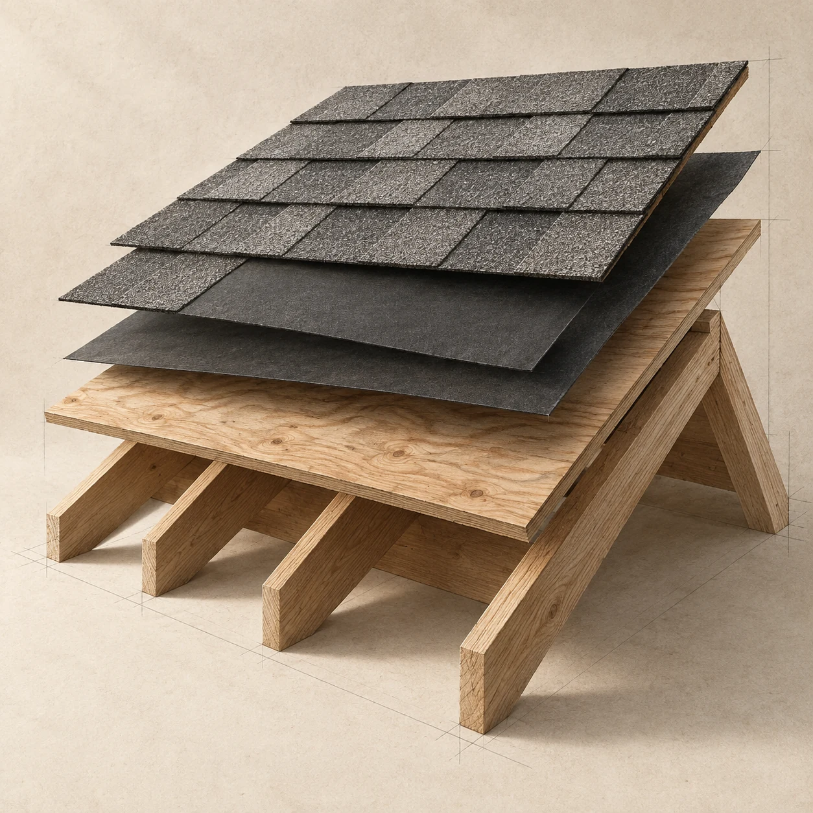

ROOFING CONCERNS
Start with what
you’ve noticed.
You don’t need to choose between repair and replacement before a visit. Start with the change at your property.

Water where it shouldn’t be.
A mark on the ceiling. A damp patch near a window. Note where it appears and whether you notice it after rain.
Where is the mark? When did you first notice it?
Start with this concernA change in the shingles.
Missing, lifted or worn-looking shingles can be easier to describe than to explain. Start with the area you can see.
Which side of the roof? What looks different?
Start with this concernSomething changed after weather.
Tell us when the weather happened and what you noticed afterward. A description is enough to start the conversation.
What changed? Do you know when it happened?
Start with this concernA roof you’d like checked.
You may not know the age of the roof or when it was last inspected. Bring the questions you already have.
What would you like to understand about your roof?
Start with this concernNot sure which one fits?
“Something else” is an option on the request form. You can describe the problem in your own words.
Describe your concern
Edges and
connections matter.
A roof changes direction at ridges, edges and the places where materials meet. Our illustrated guide helps put names to those parts.
Explore roof anatomyHave something you want us to look at?
You don’t need the roofing term. Tell us what you’ve noticed.
Request an inspection